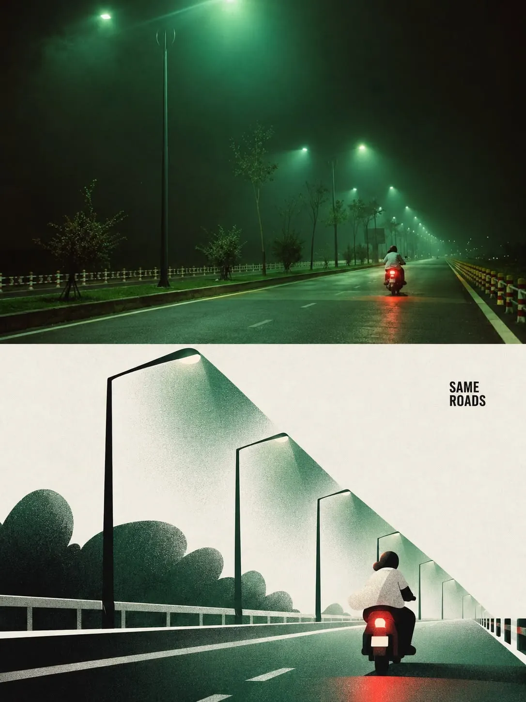
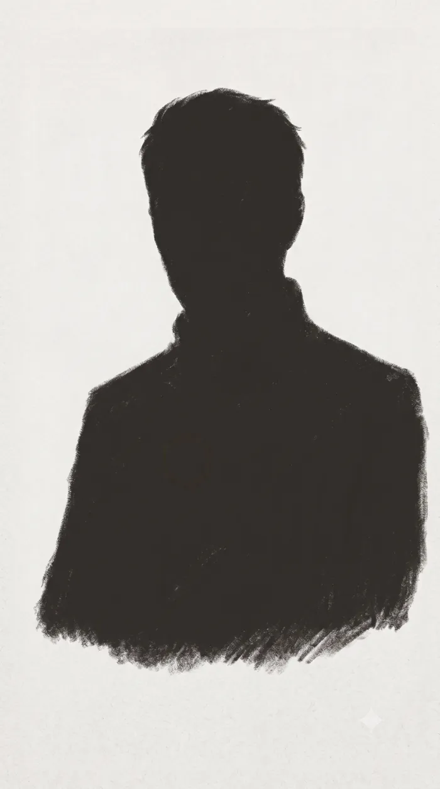
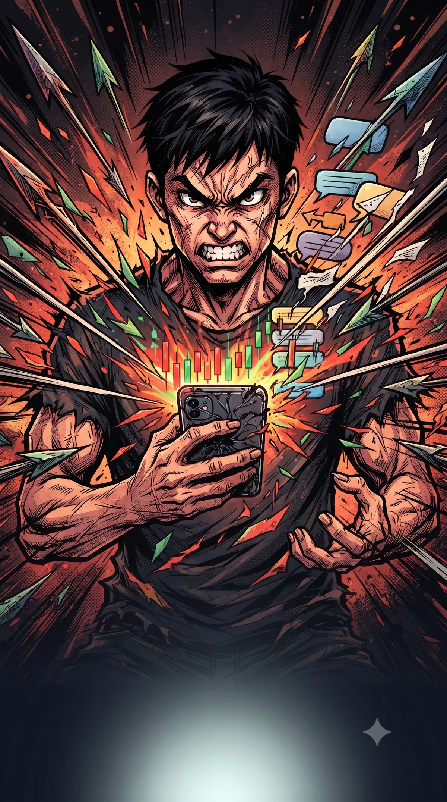
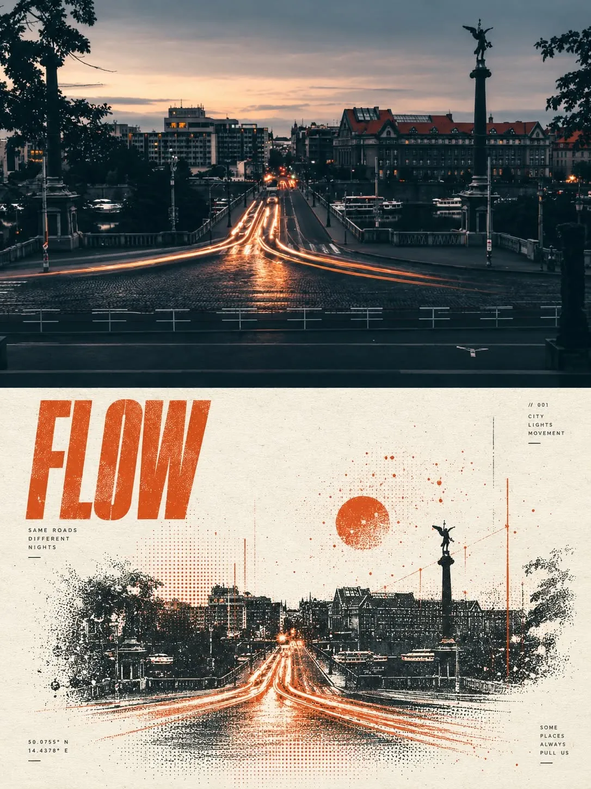
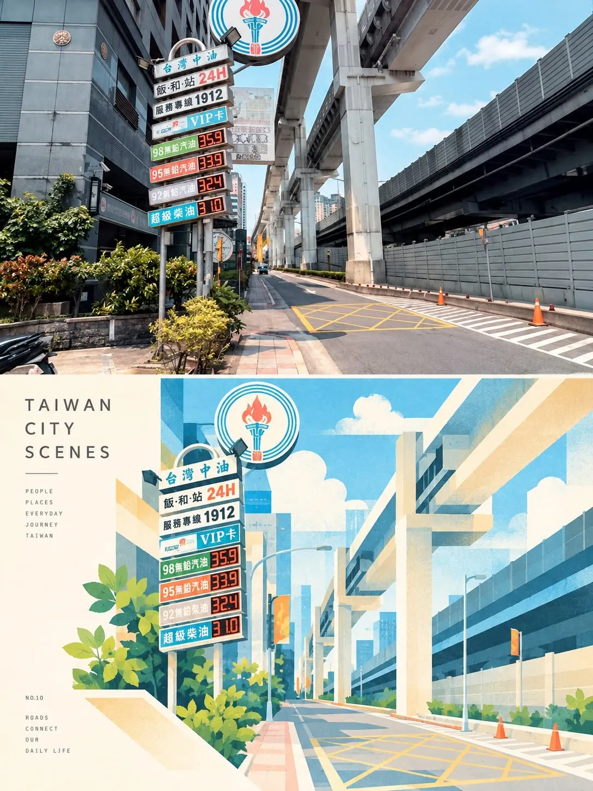

挑一個風格 → 展開看詳盡提示詞 → 「複製完整提示詞」→ 貼 Gemini 生圖。新增風格：複製 templates/image-style.template.md → 生樣片 → 跑 build_gallery.py。

3:4 直式上下各半——上半原照忠實保留＋微調色；下半編輯感幾何角色海報（剪紙＋柔和噴槍陰影＋印刷質感、乾淨色塊無描邊、大留白、一個 2–5 字小黑標題）
Convert EACH uploaded photo into its OWN separate premium minimalist poster — do NOT combine images. Vertical 3:4 layout split into two EQUAL halves: TOP 50% = the ORIGINAL PHOTO, preserved as faithfully as possible (identity, proportions, pose, clothing, objects, natural light, texture, color mood), only subtle refined color grading; you may naturally extend the background or crop carefully to fit, but NEVER stretch, distort, replace, redraw or substantially alter important people or objects. BOTTOM 50% = an EDITORIAL CHARACTER POSTER: not a cartoon filter of the whole photo — first identify the 2–5 strongest visual memory points (main subject, action, body direction, outfit colors, key object, emotional tone, subject–environment relationship), remove most background detail, and redraw ONLY those essentials as a finished editorial character illustration. A person becomes a geometric character: small head, elongated CAPSULE-shaped limbs, large asymmetric body shape, simple hands, black cut-paper facial features; no realism or skin detail, but keep the original pose, action, hair silhouette, outfit colors and interaction so it clearly comes from the photo. Pick ONE important object / prop / plant / vehicle / furniture / architectural element / shadow / light source / environmental feature and ENLARGE it asymmetrically; it must ACTIVELY interact with the character (hug, lean on, sit on, overlap, wrap, drag, visually connect) to form a new simple memorable silhouette with strong asymmetry, diagonal movement, overlap, imbalance or big–small contrast. Style: flat geometric illustration + editorial character poster + modern cut-paper graphics + soft AIRBRUSH shadows + refined PRINT texture; large clean color blocks with crisp edges, NO cartoon outlines; subtle tonal (same-hue) gradients only inside shadow areas; do not force the same palette on every image. Keep clean negative space: the main illustration group occupies ~40–65% of the bottom half, leaving a clear open paper area. Add ONLY ONE small black title in the negative space, 2–5 words based on the photo's place, action, mood or memory (e.g. STILL HERE, After the Rain, SLOW MORNING, Between Waves, JUST WAITING) — no large headline, no text box. The final image must read as "real photo → designed interpretation". NEGATIVES: no direct cartoon filter, no full-scene tracing, no cute chibi, no anime, no Disney style, no realistic face or skin in the bottom half, no thick outlines, no glossy 3D, no plastic material, no rough canvas, no distressed vintage texture, no busy background, no extra people, no extra limbs, no unnecessary text, no logo, no template-like composition, no combining multiple photos. Cast: whoever is IN THE UPLOADED PHOTO — never invent a new person. Top half keeps them photo-real and untouched; bottom half turns the same person into the geometric editorial character (small head, capsule limbs, asymmetric body block, simple hands, black cut-paper features) while keeping their pose, hair silhouette, outfit colors and interaction. If the person is Yoda himself, preserve his identifying traits in BOTH halves — the flat-top crew cut (平頭) hair silhouette and his actual outfit colors/build — so the bottom character still reads as him. One poster per photo; no extra people. Use the uploaded photo as-is. TOP 50%: original photo, subtle color grade only. BOTTOM 50%: (1) the person as a geometric cut-paper character in the SAME pose; (2) ONE key object from the photo enlarged asymmetrically and physically interacting with them (leaning on / hugging / sitting on); (3) diagonal movement and big–small contrast; (4) clean color blocks taken from the outfit and the object, airbrush shadows with same-hue gradients; (5) illustration ~40–65% of the half, open paper area left; (6) ONE small black 2–5 word title in the negative space. 3:4 vertical.
Convert EACH uploaded photo into its OWN separate premium minimalist poster — do NOT combine images. Vertical 3:4 layout split into two EQUAL halves: TOP 50% = the ORIGINAL PHOTO, preserved as faithfully as possible (identity, proportions, pose, clothing, objects, natural light, texture, color mood), only subtle refined color grading; you may naturally extend the background or crop carefully to fit, but NEVER stretch, distort, replace, redraw or substantially alter important people or objects. BOTTOM 50% = an EDITORIAL CHARACTER POSTER: not a cartoon filter of the whole photo — first identify the 2–5 strongest visual memory points (main subject, action, body direction, outfit colors, key object, emotional tone, subject–environment relationship), remove most background detail, and redraw ONLY those essentials as a finished editorial character illustration. A person becomes a geometric character: small head, elongated CAPSULE-shaped limbs, large asymmetric body shape, simple hands, black cut-paper facial features; no realism or skin detail, but keep the original pose, action, hair silhouette, outfit colors and interaction so it clearly comes from the photo. Pick ONE important object / prop / plant / vehicle / furniture / architectural element / shadow / light source / environmental feature and ENLARGE it asymmetrically; it must ACTIVELY interact with the character (hug, lean on, sit on, overlap, wrap, drag, visually connect) to form a new simple memorable silhouette with strong asymmetry, diagonal movement, overlap, imbalance or big–small contrast. Style: flat geometric illustration + editorial character poster + modern cut-paper graphics + soft AIRBRUSH shadows + refined PRINT texture; large clean color blocks with crisp edges, NO cartoon outlines; subtle tonal (same-hue) gradients only inside shadow areas; do not force the same palette on every image. Keep clean negative space: the main illustration group occupies ~40–65% of the bottom half, leaving a clear open paper area. Add ONLY ONE small black title in the negative space, 2–5 words based on the photo's place, action, mood or memory (e.g. STILL HERE, After the Rain, SLOW MORNING, Between Waves, JUST WAITING) — no large headline, no text box. The final image must read as "real photo → designed interpretation". NEGATIVES: no direct cartoon filter, no full-scene tracing, no cute chibi, no anime, no Disney style, no realistic face or skin in the bottom half, no thick outlines, no glossy 3D, no plastic material, no rough canvas, no distressed vintage texture, no busy background, no extra people, no extra limbs, no unnecessary text, no logo, no template-like composition, no combining multiple photos. Cast: whoever is IN THE UPLOADED PHOTO — never invent a new person. Top half keeps them photo-real and untouched; bottom half turns the same person into the geometric editorial character (small head, capsule limbs, asymmetric body block, simple hands, black cut-paper features) while keeping their pose, hair silhouette, outfit colors and interaction. If the person is Yoda himself, preserve his identifying traits in BOTH halves — the flat-top crew cut (平頭) hair silhouette and his actual outfit colors/build — so the bottom character still reads as him. One poster per photo; no extra people. Same two-half poster from the uploaded photo, composed so the whole 3:4 frame can sit inside the central 3:4 safe area of a 9:16 Reels/Shorts canvas. Keep the small black title short and in the open paper area of the bottom half (the cover's big main-axis text is added separately in editing, not by the model). If the subject is Yoda, keep his flat-top crew cut silhouette and outfit colors recognizable in both halves. 3:4 vertical.

極簡炭筆線條、寥寥幾筆、大量留白；傳達智慧・沉思・決斷；可為半身或純剪影，單一金色點綴
ONE SINGLE MINIMAL CHARCOAL SILHOUETTE of a single figure — a head-and-shoulders BUST (head, neck, shoulders, upper chest) filled with VISIBLE HAND-MADE CHARCOAL BRUSH STROKES — dry-brush charcoal texture, rubbed and smeared, streaky charcoal marks, rough grainy feathered edges and a dry-brush lower hem (clearly hand-drawn charcoal, NOT a flat clean vector fill). STRICTLY FEATURELESS — a solid dark silhouette with ABSOLUTELY NO face: no eyes, no nose, no mouth, no facial features, no interior detail of any kind. The bust sits centred with VAST NEGATIVE SPACE around it (empty top, sides, and bottom). Warm paper-white background with subtle paper grain. PURE monochrome — deep charcoal / soft grey only, NO gold and NO color of any kind. The figure reads as WISE, CONTEMPLATIVE, DECISIVE through calm, natural, upright posture alone — a slight three-quarter turn, head level, gaze forward/slightly to the side; nothing theatrical. Vertical 9:16, generous breathing room, quiet space kept for a caption. NEGATIVES: NO face, no eyes, no nose, no mouth, no facial features/detail, no interior rendering, no flat clean vector fill, no smooth solid fill, no rendered scene or environment, no heavy background, no panels/grid/borders, no text, no watermark, no logo, no color, no photorealism, no clutter, no green skin, no oversized pointed ears, no Jedi robe, no long or styled hair. Cast: ONE recurring ORIGINAL figure — "The Sage" (Yoda Research 化身), original design, NOT any existing franchise character. A composed man who reads about 40, with a CLOSE-CROPPED FLAT-TOP CREW CUT (平頭 — very short hair, flat on top, short sides; the head silhouette is squarish on top, NOT rounded with hair volume). Convey WISDOM · CONTEMPLATION · DECISIVENESS through a calm, steady, straightforward gaze and a NATURAL, relaxed, upright bearing — NOT a posed, artsy or theatrical stance: no dramatic head-tilt, no lowered "thinking" head, no hand-to-chin cliché. Framed as a head-and-shoulders BUST (include upper chest), slight THREE-QUARTER turn, gaze forward or slightly to the side, head level. FEATURELESS silhouette — no facial features, no interior detail; a coat/collar only implied by the shape's edge — nothing more, and NO gold or colored accent. Keep the SAME simple character across shots. No green skin, no pointed ears, no Jedi robe, no long or styled hair. A FEATURELESS charcoal-SMUDGE SILHOUETTE bust of the Sage — head + neck + shoulders + upper chest — flat-top crew cut (平頭, squarish short-hair top), slight three-quarter turn, head level, gaze forward/slightly to the side, natural and relaxed (not posed). ONE soft charcoal shape, rubbed/smeared with rough grainy feathered edges and a dry-brush lower hem, on warm paper-white. Centred with vast empty space all around. Pure charcoal, NO accent, no facial features. Nothing else. 9:16, caption room at the bottom.
ONE SINGLE MINIMAL CHARCOAL SILHOUETTE of a single figure — a head-and-shoulders BUST (head, neck, shoulders, upper chest) filled with VISIBLE HAND-MADE CHARCOAL BRUSH STROKES — dry-brush charcoal texture, rubbed and smeared, streaky charcoal marks, rough grainy feathered edges and a dry-brush lower hem (clearly hand-drawn charcoal, NOT a flat clean vector fill). STRICTLY FEATURELESS — a solid dark silhouette with ABSOLUTELY NO face: no eyes, no nose, no mouth, no facial features, no interior detail of any kind. The bust sits centred with VAST NEGATIVE SPACE around it (empty top, sides, and bottom). Warm paper-white background with subtle paper grain. PURE monochrome — deep charcoal / soft grey only, NO gold and NO color of any kind. The figure reads as WISE, CONTEMPLATIVE, DECISIVE through calm, natural, upright posture alone — a slight three-quarter turn, head level, gaze forward/slightly to the side; nothing theatrical. Vertical 9:16, generous breathing room, quiet space kept for a caption. NEGATIVES: NO face, no eyes, no nose, no mouth, no facial features/detail, no interior rendering, no flat clean vector fill, no smooth solid fill, no rendered scene or environment, no heavy background, no panels/grid/borders, no text, no watermark, no logo, no color, no photorealism, no clutter, no green skin, no oversized pointed ears, no Jedi robe, no long or styled hair. Cast: ONE recurring ORIGINAL figure — "The Sage" (Yoda Research 化身), original design, NOT any existing franchise character. A composed man who reads about 40, with a CLOSE-CROPPED FLAT-TOP CREW CUT (平頭 — very short hair, flat on top, short sides; the head silhouette is squarish on top, NOT rounded with hair volume). Convey WISDOM · CONTEMPLATION · DECISIVENESS through a calm, steady, straightforward gaze and a NATURAL, relaxed, upright bearing — NOT a posed, artsy or theatrical stance: no dramatic head-tilt, no lowered "thinking" head, no hand-to-chin cliché. Framed as a head-and-shoulders BUST (include upper chest), slight THREE-QUARTER turn, gaze forward or slightly to the side, head level. FEATURELESS silhouette — no facial features, no interior detail; a coat/collar only implied by the shape's edge — nothing more, and NO gold or colored accent. Keep the SAME simple character across shots. No green skin, no pointed ears, no Jedi robe, no long or styled hair. The Sage in a few charcoal lines, flat-top crew cut (平頭): standing naturally, head level, looking straight ahead — calm and grounded. NO hand-to-chin, NO lowered "thinking" head, nothing theatrical. Only essential lines — coat by 2–3 strokes, face by a few marks. Plain background, generous white space. Pure charcoal, no accent. Mood: 自然、內斂、篤定。 9:16.
ONE SINGLE MINIMAL CHARCOAL SILHOUETTE of a single figure — a head-and-shoulders BUST (head, neck, shoulders, upper chest) filled with VISIBLE HAND-MADE CHARCOAL BRUSH STROKES — dry-brush charcoal texture, rubbed and smeared, streaky charcoal marks, rough grainy feathered edges and a dry-brush lower hem (clearly hand-drawn charcoal, NOT a flat clean vector fill). STRICTLY FEATURELESS — a solid dark silhouette with ABSOLUTELY NO face: no eyes, no nose, no mouth, no facial features, no interior detail of any kind. The bust sits centred with VAST NEGATIVE SPACE around it (empty top, sides, and bottom). Warm paper-white background with subtle paper grain. PURE monochrome — deep charcoal / soft grey only, NO gold and NO color of any kind. The figure reads as WISE, CONTEMPLATIVE, DECISIVE through calm, natural, upright posture alone — a slight three-quarter turn, head level, gaze forward/slightly to the side; nothing theatrical. Vertical 9:16, generous breathing room, quiet space kept for a caption. NEGATIVES: NO face, no eyes, no nose, no mouth, no facial features/detail, no interior rendering, no flat clean vector fill, no smooth solid fill, no rendered scene or environment, no heavy background, no panels/grid/borders, no text, no watermark, no logo, no color, no photorealism, no clutter, no green skin, no oversized pointed ears, no Jedi robe, no long or styled hair. Cast: ONE recurring ORIGINAL figure — "The Sage" (Yoda Research 化身), original design, NOT any existing franchise character. A composed man who reads about 40, with a CLOSE-CROPPED FLAT-TOP CREW CUT (平頭 — very short hair, flat on top, short sides; the head silhouette is squarish on top, NOT rounded with hair volume). Convey WISDOM · CONTEMPLATION · DECISIVENESS through a calm, steady, straightforward gaze and a NATURAL, relaxed, upright bearing — NOT a posed, artsy or theatrical stance: no dramatic head-tilt, no lowered "thinking" head, no hand-to-chin cliché. Framed as a head-and-shoulders BUST (include upper chest), slight THREE-QUARTER turn, gaze forward or slightly to the side, head level. FEATURELESS silhouette — no facial features, no interior detail; a coat/collar only implied by the shape's edge — nothing more, and NO gold or colored accent. Keep the SAME simple character across shots. No green skin, no pointed ears, no Jedi robe, no long or styled hair. The Sage, minimal bust, upright, looking straight ahead with a calm, decisive gaze — a single firm brow line and steady eyes carry the authority. Drawn in a few confident charcoal strokes; plain background, wide negative space. Pure charcoal, no accent. Mood: 決斷、篤定、看透。 9:16.

賽璐璐上色、粗黑線、速度線、網點、鮮豔飽和
ONE SINGLE full-bleed image — a single continuous scene, NOT a comic page: no panels, no grid, no split-screen, no multiple frames, no borders or gutters. Dynamic full-color action-manga illustration style (single-frame key art, not a comic strip). Bold confident black ink outlines, aggressive speed lines, screentone/halftone shading, high-contrast cel shading, vivid saturated colors, energetic angle, strong sense of motion. Vertical 9:16 portrait, single frame; subject in the upper two-thirds with empty space at the bottom for captions. NEGATIVES: no panels, no grid, no multiple frames, no borders, no text, no watermark, no signature, no logo. Recurring character: a young man, 25–30, short black hair, plain dark crew-neck T-shirt — an ordinary retail investor. Keep face/hair/wardrobe consistent across every shot. He looks down at a smartphone; the glowing screen bursts with red/green candlestick charts and stacked pop-up chat bubbles; a chaotic swirl of colorful bubbles, arrows and notification dots explodes around his head, speed lines converging on the phone. Expression: half-skeptical, overwhelmed. Upper-body bust, slight high angle.
ONE SINGLE full-bleed image — a single continuous scene, NOT a comic page: no panels, no grid, no split-screen, no multiple frames, no borders or gutters. Dynamic full-color action-manga illustration style (single-frame key art, not a comic strip). Bold confident black ink outlines, aggressive speed lines, screentone/halftone shading, high-contrast cel shading, vivid saturated colors, energetic angle, strong sense of motion. Vertical 9:16 portrait, single frame; subject in the upper two-thirds with empty space at the bottom for captions. NEGATIVES: no panels, no grid, no multiple frames, no borders, no text, no watermark, no signature, no logo. Recurring character: a young man, 25–30, short black hair, plain dark crew-neck T-shirt — an ordinary retail investor. Keep face/hair/wardrobe consistent across every shot. He clutches his head with both hands, eyes wide, mouth open mid-gasp; explosive radiating speed lines and abstract shockwaves press in from every side; dramatic saturated reds and dark shadows. Close-up to chest, aggressive foreshortening.
ONE SINGLE full-bleed image — a single continuous scene, NOT a comic page: no panels, no grid, no split-screen, no multiple frames, no borders or gutters. Dynamic full-color action-manga illustration style (single-frame key art, not a comic strip). Bold confident black ink outlines, aggressive speed lines, screentone/halftone shading, high-contrast cel shading, vivid saturated colors, energetic angle, strong sense of motion. Vertical 9:16 portrait, single frame; subject in the upper two-thirds with empty space at the bottom for captions. NEGATIVES: no panels, no grid, no multiple frames, no borders, no text, no watermark, no signature, no logo. Recurring character: a young man, 25–30, short black hair, plain dark crew-neck T-shirt — an ordinary retail investor. Keep face/hair/wardrobe consistent across every shot. He glances at his phone with a smug, self-satisfied smirk, one eyebrow raised, leaning back, overconfident — a cocky glint in his eye. Warm punchy colors, sparkle highlights, light speed lines. Upper-body bust.
ONE SINGLE full-bleed image — a single continuous scene, NOT a comic page: no panels, no grid, no split-screen, no multiple frames, no borders or gutters. Dynamic full-color action-manga illustration style (single-frame key art, not a comic strip). Bold confident black ink outlines, aggressive speed lines, screentone/halftone shading, high-contrast cel shading, vivid saturated colors, energetic angle, strong sense of motion. Vertical 9:16 portrait, single frame; subject in the upper two-thirds with empty space at the bottom for captions. NEGATIVES: no panels, no grid, no multiple frames, no borders, no text, no watermark, no signature, no logo. Recurring character: a young man, 25–30, short black hair, plain dark crew-neck T-shirt — an ordinary retail investor. Keep face/hair/wardrobe consistent across every shot. He stares at his phone, smile gone, face fallen, hollow eyes, slumped shoulders; cold desaturated blue-grey palette with the color draining away, heavy halftone shadow. Upper-body, pulled back to emphasize isolation.
ONE SINGLE full-bleed image — a single continuous scene, NOT a comic page: no panels, no grid, no split-screen, no multiple frames, no borders or gutters. Dynamic full-color action-manga illustration style (single-frame key art, not a comic strip). Bold confident black ink outlines, aggressive speed lines, screentone/halftone shading, high-contrast cel shading, vivid saturated colors, energetic angle, strong sense of motion. Vertical 9:16 portrait, single frame; subject in the upper two-thirds with empty space at the bottom for captions. NEGATIVES: no panels, no grid, no multiple frames, no borders, no text, no watermark, no signature, no logo. Recurring character: a young man, 25–30, short black hair, plain dark crew-neck T-shirt — an ordinary retail investor. Keep face/hair/wardrobe consistent across every shot. Calm, composed, focused, reading/analyzing from a tablet; clear determined eyes, quiet self-possession. Confident clean linework, warm balanced heroic lighting, controlled calm focus lines. Upper-body, slight low angle.
厚塗概念藝術、動勢強、前衛戰士、暴力美學（帥而狠，非血腥）
ONE SINGLE UNIFIED FULL-BLEED IMAGE — a single continuous scene, NOT a comic page: do NOT split into panels, grids, tiles, triptychs or multiple frames, and add NO borders or gutters. CRITICAL — MAXIMUM DETAIL, NO LAZINESS: densely rendered, gallery-quality cinematic anime concept-art key illustration. Render EVERY element listed below; do NOT simplify, abbreviate, omit, or leave any area blank — fill the whole 9:16 frame, with foreground, midground and background rendered as DEPTH LAYERS INSIDE THE SAME single image (not separate panels). Painterly marker/gouache brushwork with visible directional strokes and palette-knife texture; crisp focal detail against richer painterly passages; strong cinematic light with bloom, backlight/rim light and atmospheric haze; bold diagonal ribbon/slash shapes and speed streaks; high dynamic range, deep blacks, high contrast; stylish, intense, kinetic "violence aesthetics" mood (stylized, never gory). Vertical 9:16, single frame; keep a readable lower-third for captions. NEGATIVES: NO panels, NO grid, NO split-screen, NO triptych, NO multiple frames or tiles, NO comic-strip layout, NO borders or gutters, no text, no watermark, no signature, no logo, NO empty/blank/plain background, NO minimalism, NO missing outfit pieces. Cast: fierce young "market warriors" in avant-garde techwear / battle gear. Render the COMPLETE outfit and every accessory named per scene (jackets, plating, harnesses, straps, buckles, pouches, gloves, goggles, scarves/capes). The weapon is a glowing trading-device (phone/tablet reimagined); the market's noise — candlesticks, tickers, arrows, chat-bubbles — is the enemy energy densely swirling around them. Mixed genders across shots; each fighter is distinct. MUST RENDER ALL OF THE FOLLOWING, none omitted: (1) CHARACTER: a fierce young WOMAN street-fighter — sharp determined face, wind-blown hair; FULL outfit: asymmetric armored techwear jacket, layered utility harness with visible pouches and buckles, fingerless tactical gloves, goggles pushed up on her forehead. (2) POSE: gripping a glowing trading-device two-handed like a blade, leaning into camera, eyes wide and locked, jaw set. (3) CAMERA: low Dutch-angle worm's-eye, wide lens, tilted horizon. (4) FOREGROUND (sharp, in front of her): candlestick-bar shrapnel and a large red down-arrow slashing diagonally past the lens; scattered glowing chat-bubble fragments. (5) BACKGROUND (fills the whole frame, NOT blank): a towering swirling vortex-wall built from hundreds of glowing market tickers, red/green candlestick charts, notification pop-ups, group-chat bubbles and gurus' arrows spiralling inward; diagonal ticker-tape ribbons. (6) LIGHTING: the device screen UNDER-lights her face flickering red/green; cyan rim light; magenta bounce. (7) PARTICLES (visible): floating sparks, screen-glow dust, fine motion streaks. (8) COLOR SCRIPT (use all three): electric-cyan dominant + hot-magenta accent + red/green candlestick pops. (9) MOOD: hypnotized, pulled into the noise.
ONE SINGLE UNIFIED FULL-BLEED IMAGE — a single continuous scene, NOT a comic page: do NOT split into panels, grids, tiles, triptychs or multiple frames, and add NO borders or gutters. CRITICAL — MAXIMUM DETAIL, NO LAZINESS: densely rendered, gallery-quality cinematic anime concept-art key illustration. Render EVERY element listed below; do NOT simplify, abbreviate, omit, or leave any area blank — fill the whole 9:16 frame, with foreground, midground and background rendered as DEPTH LAYERS INSIDE THE SAME single image (not separate panels). Painterly marker/gouache brushwork with visible directional strokes and palette-knife texture; crisp focal detail against richer painterly passages; strong cinematic light with bloom, backlight/rim light and atmospheric haze; bold diagonal ribbon/slash shapes and speed streaks; high dynamic range, deep blacks, high contrast; stylish, intense, kinetic "violence aesthetics" mood (stylized, never gory). Vertical 9:16, single frame; keep a readable lower-third for captions. NEGATIVES: NO panels, NO grid, NO split-screen, NO triptych, NO multiple frames or tiles, NO comic-strip layout, NO borders or gutters, no text, no watermark, no signature, no logo, NO empty/blank/plain background, NO minimalism, NO missing outfit pieces. Cast: fierce young "market warriors" in avant-garde techwear / battle gear. Render the COMPLETE outfit and every accessory named per scene (jackets, plating, harnesses, straps, buckles, pouches, gloves, goggles, scarves/capes). The weapon is a glowing trading-device (phone/tablet reimagined); the market's noise — candlesticks, tickers, arrows, chat-bubbles — is the enemy energy densely swirling around them. Mixed genders across shots; each fighter is distinct. MUST RENDER ALL OF THE FOLLOWING, none omitted: (1) CHARACTER: a young MAN fighter — battle-worn face, sweat, wild dark hair; FULL outfit: torn combat vest with straps, bandaged forearms, dog-tag chain. (2) POSE: both hands clawing into his hair, mouth open mid-roar, straining veins. (3) CAMERA: extreme close-up, aggressive wide-angle foreshortening, slight fish-eye, face filling the upper frame. (4) FOREGROUND (razor-sharp): his clawing fingers and knuckles. (5) BACKGROUND (fills the frame, NOT blank): an inferno-storm of shredded speech-shapes, concentric jagged shockwave rings, red exclamation slashes and flying debris exploding outward. (6) LIGHTING: a blinding explosive blast directly BEHIND his head (backlit), face thrown into hot rim-lit shadow. (7) PARTICLES (visible): rising ash, ember sparks, smoke, heat shimmer. (8) COLOR SCRIPT (use all three): molten-orange dominant + crimson core fading to charred black + a white-hot stab at the blast center. (9) MOOD: detonation, total overload.
ONE SINGLE UNIFIED FULL-BLEED IMAGE — a single continuous scene, NOT a comic page: do NOT split into panels, grids, tiles, triptychs or multiple frames, and add NO borders or gutters. CRITICAL — MAXIMUM DETAIL, NO LAZINESS: densely rendered, gallery-quality cinematic anime concept-art key illustration. Render EVERY element listed below; do NOT simplify, abbreviate, omit, or leave any area blank — fill the whole 9:16 frame, with foreground, midground and background rendered as DEPTH LAYERS INSIDE THE SAME single image (not separate panels). Painterly marker/gouache brushwork with visible directional strokes and palette-knife texture; crisp focal detail against richer painterly passages; strong cinematic light with bloom, backlight/rim light and atmospheric haze; bold diagonal ribbon/slash shapes and speed streaks; high dynamic range, deep blacks, high contrast; stylish, intense, kinetic "violence aesthetics" mood (stylized, never gory). Vertical 9:16, single frame; keep a readable lower-third for captions. NEGATIVES: NO panels, NO grid, NO split-screen, NO triptych, NO multiple frames or tiles, NO comic-strip layout, NO borders or gutters, no text, no watermark, no signature, no logo, NO empty/blank/plain background, NO minimalism, NO missing outfit pieces. Cast: fierce young "market warriors" in avant-garde techwear / battle gear. Render the COMPLETE outfit and every accessory named per scene (jackets, plating, harnesses, straps, buckles, pouches, gloves, goggles, scarves/capes). The weapon is a glowing trading-device (phone/tablet reimagined); the market's noise — candlesticks, tickers, arrows, chat-bubbles — is the enemy energy densely swirling around them. Mixed genders across shots; each fighter is distinct. MUST RENDER ALL OF THE FOLLOWING, none omitted: (1) CHARACTER: a cocky young WOMAN gunslinger — smug smirk, eyebrow raised; FULL outfit: bold red scarf/half-cape, sleek plated bodysuit with panel lines, one glove off, thigh holster. (2) POSE: relaxed lean-back swagger, idly twirling a glowing coin-token, glancing at her device. (3) CAMERA: slightly low hero angle, medium telephoto, shallow depth of field. (4) FOREGROUND: soft golden bokeh and a rising green up-arrow ribbon curling past. (5) BACKGROUND (fills the frame, NOT blank): a warm haze packed with ascending green numbers, coins and candlesticks dissolving into layered light-bokeh; diagonal god-rays. (6) LIGHTING: a warm sun-flare HALO blooming behind her head — a fake "sunrise of success" — with lens-flare streaks and warm rim light. (7) PARTICLES (visible): dust motes in sun, drifting glints. (8) COLOR SCRIPT (use all three): gold + amber + coral warm dominant, with cool-teal shadow accents. (9) MOOD: intoxicating overconfidence, ironically too-perfect glow.
ONE SINGLE UNIFIED FULL-BLEED IMAGE — a single continuous scene, NOT a comic page: do NOT split into panels, grids, tiles, triptychs or multiple frames, and add NO borders or gutters. CRITICAL — MAXIMUM DETAIL, NO LAZINESS: densely rendered, gallery-quality cinematic anime concept-art key illustration. Render EVERY element listed below; do NOT simplify, abbreviate, omit, or leave any area blank — fill the whole 9:16 frame, with foreground, midground and background rendered as DEPTH LAYERS INSIDE THE SAME single image (not separate panels). Painterly marker/gouache brushwork with visible directional strokes and palette-knife texture; crisp focal detail against richer painterly passages; strong cinematic light with bloom, backlight/rim light and atmospheric haze; bold diagonal ribbon/slash shapes and speed streaks; high dynamic range, deep blacks, high contrast; stylish, intense, kinetic "violence aesthetics" mood (stylized, never gory). Vertical 9:16, single frame; keep a readable lower-third for captions. NEGATIVES: NO panels, NO grid, NO split-screen, NO triptych, NO multiple frames or tiles, NO comic-strip layout, NO borders or gutters, no text, no watermark, no signature, no logo, NO empty/blank/plain background, NO minimalism, NO missing outfit pieces. Cast: fierce young "market warriors" in avant-garde techwear / battle gear. Render the COMPLETE outfit and every accessory named per scene (jackets, plating, harnesses, straps, buckles, pouches, gloves, goggles, scarves/capes). The weapon is a glowing trading-device (phone/tablet reimagined); the market's noise — candlesticks, tickers, arrows, chat-bubbles — is the enemy energy densely swirling around them. Mixed genders across shots; each fighter is distinct. MUST RENDER ALL OF THE FOLLOWING, none omitted: (1) CHARACTER: a lone young MAN warrior — head bowed, hollow face; FULL outfit: heavy ragged cloak, cracked shoulder armor, worn bracers. (2) POSE: kneeling, slumped, device loose in one hand, mirror reflection in the water. (3) CAMERA: high bird's-eye looking down, ultra-wide; the figure small and off-center with heavy negative space that is still richly rendered. (4) FOREGROUND: drifting ash and a broken red candlestick sinking into shallow water. (5) BACKGROUND (fills the frame, NOT blank): a cavernous dim ruined trading-arena flooded with shallow water; faint sinking red charts visible under the surface; distant cold light shafts and mist. (6) LIGHTING: a single cold overhead pool of light casting one long stark shadow; everything else falling to dark. (7) PARTICLES (visible): still-water ripples and reflections, floating ash, cold fog. (8) COLOR SCRIPT (use all three): deep-indigo dominant + slate blue-grey desaturated + ONE dying ember-red reflection as the only warm note. (9) MOOD: lonely defeat, no one answers for the loss.
ONE SINGLE UNIFIED FULL-BLEED IMAGE — a single continuous scene, NOT a comic page: do NOT split into panels, grids, tiles, triptychs or multiple frames, and add NO borders or gutters. CRITICAL — MAXIMUM DETAIL, NO LAZINESS: densely rendered, gallery-quality cinematic anime concept-art key illustration. Render EVERY element listed below; do NOT simplify, abbreviate, omit, or leave any area blank — fill the whole 9:16 frame, with foreground, midground and background rendered as DEPTH LAYERS INSIDE THE SAME single image (not separate panels). Painterly marker/gouache brushwork with visible directional strokes and palette-knife texture; crisp focal detail against richer painterly passages; strong cinematic light with bloom, backlight/rim light and atmospheric haze; bold diagonal ribbon/slash shapes and speed streaks; high dynamic range, deep blacks, high contrast; stylish, intense, kinetic "violence aesthetics" mood (stylized, never gory). Vertical 9:16, single frame; keep a readable lower-third for captions. NEGATIVES: NO panels, NO grid, NO split-screen, NO triptych, NO multiple frames or tiles, NO comic-strip layout, NO borders or gutters, no text, no watermark, no signature, no logo, NO empty/blank/plain background, NO minimalism, NO missing outfit pieces. Cast: fierce young "market warriors" in avant-garde techwear / battle gear. Render the COMPLETE outfit and every accessory named per scene (jackets, plating, harnesses, straps, buckles, pouches, gloves, goggles, scarves/capes). The weapon is a glowing trading-device (phone/tablet reimagined); the market's noise — candlesticks, tickers, arrows, chat-bubbles — is the enemy energy densely swirling around them. Mixed genders across shots; each fighter is distinct. MUST RENDER ALL OF THE FOLLOWING, none omitted: (1) CHARACTER: a composed young WOMAN hero — calm sharp eyes, faint resolute look; FULL outfit: elegant avant-garde long-coat with clean armored panel lines, high collar, structured shoulders. (2) POSE: standing tall, grounded powerful stance, holding a bladed tablet-device at rest like a sheathed katana, coat edge catching wind. (3) CAMERA: strong low hero angle, slight worm's-eye, medium lens. (4) FOREGROUND: a few crisp glowing chart-glyphs orbiting in orderly arcs (structured, not chaotic). (5) BACKGROUND (fills the frame, NOT blank): a clearing dawn horizon — layered clouds, calm sea, structured geometric light rays; the storm behind resolved into order. (6) LIGHTING: a clean rising sun/moon disc glowing directly behind her as a halo, ordered rays fanning out; strong rim light. (7) PARTICLES (visible): gentle drifting light particles, soft haze, lens bloom. (8) COLOR SCRIPT (use all three): teal + cyan dominant, warm-gold backlight rim, one controlled crimson accent thread. (9) MOOD: earned clarity, quiet power.

3:4 直式上下各半——上半原照忠實保留＋微調色；下半米白水彩紙上一個很小的細鉛筆／針筆單線手繪標誌（帶斷筆與不完美）、只在一兩處淡淡點原照關鍵色、大量留白、一句繁體中文私人筆記式短句
Convert EACH uploaded photo into its OWN separate premium minimalist design poster — never combine photos. Vertical 3:4 portrait, strictly split into TOP and BOTTOM sections of EXACTLY equal height (each precisely 50% of the canvas). TOP = the ORIGINAL PHOTO: keep the subject's structure, real texture, natural light and shadow, and the original color atmosphere; only subtle refined photographic color grading for a fine-art-photography / exhibition-portrait feel; naturally extend sky, ground or surroundings if needed to fit, but never extend, distort or alter the subject. BOTTOM = warm off-white WATERCOLOR PAPER with mostly EMPTY space: extract the most recognizable subject, silhouette, structure, pose and narrative relationship — do NOT copy the full scene — and compress them into ONE single minimal EMOTIONAL MARK that evokes feeling, not just depicts. Draw it with extremely fine, controlled, delicate SINGLE-LINE drawing (thin pencil / fine-liner, grey-blue or dark grey) describing only the most essential contours, direction and relationship — like a quiet hand-drawn note, with subtle pauses, gaps, broken strokes and natural imperfection, NOT a finished illustration. The drawing is SMALL (about 20–35% of the bottom half); the subject may be tiny, off-center, suspended, partly visible or reduced to a fragment; keep only ONE visual anchor; do not fill the composition. Optional very few support lines only: a horizon, water ripples, a plant outline, a mountain ridge, a motion trace, or one short closing hand-drawn arc — never a complex scene. COLOR: quiet, low contrast; touch color in only ONE or TWO small spots, lifting the photo's most emotionally resonant color as a pale wash (e.g. the orange-red of a ball, an orange shirt, a pale-blue watercolor sea, a tiny traffic-light dot), reinterpreted as natural tones — ink green, dark grey, warm white, mist blue, pale blue. TEXT: ONE extremely short phrase in TRADITIONAL CHINESE inspired by the photo's hidden emotion (e.g. 剛好，落下。／牽著走，日子就亮了。／前方是海，再等一下，就出發。), small elegant widely letter-spaced fine Ming-style serif or handwritten feel, like a private note; centered below the drawing or as two lines at upper-left of the bottom half; it must NOT explain the image — it is part of the emotional pause. The result is not a simplified photo but a quiet, beautiful moment that can stand on its own. NEGATIVES: no complex illustration, no full background, no excessive elements, no decorative layers, no heavy lines, no commercial minimalist template, no cartoon aesthetic, no logo-like graphic, no realistic rendering, no full-bleed illustration, no vivid saturated colors, no large headline, no English title, no explanatory caption, no combining photos. Cast: whoever is IN THE UPLOADED PHOTO — never invent a new person. Top half keeps them photo-real and untouched; bottom half reduces them to a few fine single lines — silhouette, posture and relationship only (e.g. a back view, two hands joined), no facial detail needed. If the person is Yoda himself, keep his identifying outline in the line drawing — the flat-top crew cut (平頭) head silhouette, his build and one pale wash of his actual outfit color — so the mark still reads as him. One poster per photo; no extra people. Use the uploaded photo as-is. TOP 50%: original photo, subtle grade only. BOTTOM 50%: on off-white watercolor paper, ONE small object moment drawn in fine broken single lines (e.g. a hoop and net with the ball just dropping through), placed off-center; only the object's key color as a pale wash (e.g. orange-red on rim and ball); one or two motion traces at most; vast empty paper. Below the drawing, centered, one tiny widely spaced Traditional Chinese phrase capturing the instant (e.g. 剛好，落下。). 3:4 vertical.
Convert EACH uploaded photo into its OWN separate premium minimalist design poster — never combine photos. Vertical 3:4 portrait, strictly split into TOP and BOTTOM sections of EXACTLY equal height (each precisely 50% of the canvas). TOP = the ORIGINAL PHOTO: keep the subject's structure, real texture, natural light and shadow, and the original color atmosphere; only subtle refined photographic color grading for a fine-art-photography / exhibition-portrait feel; naturally extend sky, ground or surroundings if needed to fit, but never extend, distort or alter the subject. BOTTOM = warm off-white WATERCOLOR PAPER with mostly EMPTY space: extract the most recognizable subject, silhouette, structure, pose and narrative relationship — do NOT copy the full scene — and compress them into ONE single minimal EMOTIONAL MARK that evokes feeling, not just depicts. Draw it with extremely fine, controlled, delicate SINGLE-LINE drawing (thin pencil / fine-liner, grey-blue or dark grey) describing only the most essential contours, direction and relationship — like a quiet hand-drawn note, with subtle pauses, gaps, broken strokes and natural imperfection, NOT a finished illustration. The drawing is SMALL (about 20–35% of the bottom half); the subject may be tiny, off-center, suspended, partly visible or reduced to a fragment; keep only ONE visual anchor; do not fill the composition. Optional very few support lines only: a horizon, water ripples, a plant outline, a mountain ridge, a motion trace, or one short closing hand-drawn arc — never a complex scene. COLOR: quiet, low contrast; touch color in only ONE or TWO small spots, lifting the photo's most emotionally resonant color as a pale wash (e.g. the orange-red of a ball, an orange shirt, a pale-blue watercolor sea, a tiny traffic-light dot), reinterpreted as natural tones — ink green, dark grey, warm white, mist blue, pale blue. TEXT: ONE extremely short phrase in TRADITIONAL CHINESE inspired by the photo's hidden emotion (e.g. 剛好，落下。／牽著走，日子就亮了。／前方是海，再等一下，就出發。), small elegant widely letter-spaced fine Ming-style serif or handwritten feel, like a private note; centered below the drawing or as two lines at upper-left of the bottom half; it must NOT explain the image — it is part of the emotional pause. The result is not a simplified photo but a quiet, beautiful moment that can stand on its own. NEGATIVES: no complex illustration, no full background, no excessive elements, no decorative layers, no heavy lines, no commercial minimalist template, no cartoon aesthetic, no logo-like graphic, no realistic rendering, no full-bleed illustration, no vivid saturated colors, no large headline, no English title, no explanatory caption, no combining photos. Cast: whoever is IN THE UPLOADED PHOTO — never invent a new person. Top half keeps them photo-real and untouched; bottom half reduces them to a few fine single lines — silhouette, posture and relationship only (e.g. a back view, two hands joined), no facial detail needed. If the person is Yoda himself, keep his identifying outline in the line drawing — the flat-top crew cut (平頭) head silhouette, his build and one pale wash of his actual outfit color — so the mark still reads as him. One poster per photo; no extra people. Use the uploaded photo as-is. TOP 50%: original photo, subtle grade only. BOTTOM 50%: the people reduced to small single-line back-view silhouettes keeping their real posture and relationship (e.g. mother and child holding hands, walking away); one pale wash of a clothing color (e.g. the child's orange); a faint ground line and an optional short closing hand-drawn arc; lots of empty paper. One tiny Traditional Chinese phrase, centered below or two lines at upper-left (e.g. 牽著走，日子就亮了。). 3:4 vertical.
Convert EACH uploaded photo into its OWN separate premium minimalist design poster — never combine photos. Vertical 3:4 portrait, strictly split into TOP and BOTTOM sections of EXACTLY equal height (each precisely 50% of the canvas). TOP = the ORIGINAL PHOTO: keep the subject's structure, real texture, natural light and shadow, and the original color atmosphere; only subtle refined photographic color grading for a fine-art-photography / exhibition-portrait feel; naturally extend sky, ground or surroundings if needed to fit, but never extend, distort or alter the subject. BOTTOM = warm off-white WATERCOLOR PAPER with mostly EMPTY space: extract the most recognizable subject, silhouette, structure, pose and narrative relationship — do NOT copy the full scene — and compress them into ONE single minimal EMOTIONAL MARK that evokes feeling, not just depicts. Draw it with extremely fine, controlled, delicate SINGLE-LINE drawing (thin pencil / fine-liner, grey-blue or dark grey) describing only the most essential contours, direction and relationship — like a quiet hand-drawn note, with subtle pauses, gaps, broken strokes and natural imperfection, NOT a finished illustration. The drawing is SMALL (about 20–35% of the bottom half); the subject may be tiny, off-center, suspended, partly visible or reduced to a fragment; keep only ONE visual anchor; do not fill the composition. Optional very few support lines only: a horizon, water ripples, a plant outline, a mountain ridge, a motion trace, or one short closing hand-drawn arc — never a complex scene. COLOR: quiet, low contrast; touch color in only ONE or TWO small spots, lifting the photo's most emotionally resonant color as a pale wash (e.g. the orange-red of a ball, an orange shirt, a pale-blue watercolor sea, a tiny traffic-light dot), reinterpreted as natural tones — ink green, dark grey, warm white, mist blue, pale blue. TEXT: ONE extremely short phrase in TRADITIONAL CHINESE inspired by the photo's hidden emotion (e.g. 剛好，落下。／牽著走，日子就亮了。／前方是海，再等一下，就出發。), small elegant widely letter-spaced fine Ming-style serif or handwritten feel, like a private note; centered below the drawing or as two lines at upper-left of the bottom half; it must NOT explain the image — it is part of the emotional pause. The result is not a simplified photo but a quiet, beautiful moment that can stand on its own. NEGATIVES: no complex illustration, no full background, no excessive elements, no decorative layers, no heavy lines, no commercial minimalist template, no cartoon aesthetic, no logo-like graphic, no realistic rendering, no full-bleed illustration, no vivid saturated colors, no large headline, no English title, no explanatory caption, no combining photos. Cast: whoever is IN THE UPLOADED PHOTO — never invent a new person. Top half keeps them photo-real and untouched; bottom half reduces them to a few fine single lines — silhouette, posture and relationship only (e.g. a back view, two hands joined), no facial detail needed. If the person is Yoda himself, keep his identifying outline in the line drawing — the flat-top crew cut (平頭) head silhouette, his build and one pale wash of his actual outfit color — so the mark still reads as him. One poster per photo; no extra people. Use the uploaded photo as-is. TOP 50%: original photo, subtle grade only. BOTTOM 50%: a tiny landscape fragment in fine single lines — a horizon, a road edge, a signal pole — with the sea or sky as a pale-blue watercolor wash and one tiny color dot (e.g. the traffic light); the anchor is small and off-center, the rest is open air. Two lines of tiny Traditional Chinese at upper-left of the bottom half (e.g. 前方是海，再等一下，／就出發。). 3:4 vertical.

3:4 直式上下分隔——上半原照忠實保留＋微調色；下半抽象建築幾何拼貼（半透明色塊、建築線條、水彩紙紋）、高明度清新色、左側一欄編輯排版文字（細黑體大標＋短線＋小字關鍵字＋NO.編號）
From EACH uploaded photo create its OWN separate premium minimalist design poster — never combine photos. Vertical 3:4, strictly separated TOP and BOTTOM sections. TOP = the ORIGINAL PHOTO: keep the subject's structure, real texture, natural light and shadow, and the original color atmosphere; only subtle refined color grading for an exhibition-grade fine-art-photography / independent-publishing feel; naturally extend sky, ground or surroundings if needed to fit, but never stretch, distort or alter the subject. BOTTOM = NOT a copy of the photo: extract only the most recognizable subject, silhouettes, structures, poses and narrative relationships, and rebuild the photo's meaning, emotion, symbolism and cultural connection around them. Visual language: ABSTRACT ARCHITECTURE + GEOMETRIC COLLAGE + playful modernism + contemporary editorial illustration — semi-transparent overlapping color planes (rectangles, triangles, architectural lines) like an architectural model / plane composition, watercolor-paper texture. Emphasize outline, proportion, structural relationships and spatial cues; keep only ONE core visual anchor and deliberately remove the rest. Subject may be off-center, aligned to an edge, suspended or partly cropped; keep wide negative space (air, distance, time, imagination). Clean geometry, soft flat planes, fine lines, slightly uneven hand-made edges — like an art direction system, not a redrawn photo. People keep simplified but recognizable faces and faithful poses. Steam, light and clouds as white organic curves. Real signage (Chinese characters, price boards) may stay clear and legible as a memory point. PALETTE: pick the MOST vivid colors of the top photo (not an average) and brighten them — clear sky blue, crystal/aqua blue, fresh green, warm yellow, coral orange, peach — on abundant clean off-white paper. TYPOGRAPHY: small restrained modern editorial type in a LEFT column of the bottom half: the FIXED series headline "EVERYDAY TAIWAN" set in exactly 2 lines (EVERYDAY / TAIWAN) in a wide-tracked thin sans-serif — identical on every poster, never replaced by any other headline; one short thin rule; 3–5 tiny stacked keywords written for THIS photo's content; and at bottom-left the issue number "NO.{NN}" (two digits, zero-padded, e.g. NO.01) plus a 2–4 line tiny tagline written for THIS photo; text never dominates. NEGATIVES: no realistic rendering or full copy of the photo in the bottom half, no complex background, no information overload, no cartoon aesthetic, no over-decoration, no template poster design, no cheap kids' design aesthetic, no generic flat illustration, no big bold headline, no dull or muddy colors, no combining photos.
Cast: whoever is IN THE UPLOADED PHOTO — never invent a new person. Top half keeps them photo-real and untouched; bottom half simplifies them into flat editorial illustration with simplified but recognizable faces (NOT black cut-paper features) and faithful poses, set inside the abstract architectural collage. If the person is Yoda himself, preserve his identifying traits in BOTH halves — the flat-top crew cut (平頭) silhouette, his actual outfit colors and build — so he still reads as him. One poster per photo; no extra people.
Use the uploaded photo as-is. TOP: original photo, subtle grade only. BOTTOM: (1) the people redrawn on the right side, bleeding toward the edge, faithful poses, simplified recognizable faces; (2) behind them, semi-transparent geometric color planes suggesting the space (roof beams, lamp, counter) like an architectural model; (3) steam as white organic curves; (4) colors lifted from the photo's most vivid hues, brightened; (5) LEFT column: fixed series headline EVERYDAY TAIWAN in 2 thin wide-tracked lines (EVERYDAY / TAIWAN), a short rule, 3–5 tiny keywords stacked written for this photo (e.g. SIMPLE / FOOD / WARM / PEOPLE), bottom-left NO.{NN} (two digits, e.g. NO.01) + tiny 2–4 line tagline written for this photo (e.g. A BOWL OF GOOD DAYS). 3:4 vertical.From EACH uploaded photo create its OWN separate premium minimalist design poster — never combine photos. Vertical 3:4, strictly separated TOP and BOTTOM sections. TOP = the ORIGINAL PHOTO: keep the subject's structure, real texture, natural light and shadow, and the original color atmosphere; only subtle refined color grading for an exhibition-grade fine-art-photography / independent-publishing feel; naturally extend sky, ground or surroundings if needed to fit, but never stretch, distort or alter the subject. BOTTOM = NOT a copy of the photo: extract only the most recognizable subject, silhouettes, structures, poses and narrative relationships, and rebuild the photo's meaning, emotion, symbolism and cultural connection around them. Visual language: ABSTRACT ARCHITECTURE + GEOMETRIC COLLAGE + playful modernism + contemporary editorial illustration — semi-transparent overlapping color planes (rectangles, triangles, architectural lines) like an architectural model / plane composition, watercolor-paper texture. Emphasize outline, proportion, structural relationships and spatial cues; keep only ONE core visual anchor and deliberately remove the rest. Subject may be off-center, aligned to an edge, suspended or partly cropped; keep wide negative space (air, distance, time, imagination). Clean geometry, soft flat planes, fine lines, slightly uneven hand-made edges — like an art direction system, not a redrawn photo. People keep simplified but recognizable faces and faithful poses. Steam, light and clouds as white organic curves. Real signage (Chinese characters, price boards) may stay clear and legible as a memory point. PALETTE: pick the MOST vivid colors of the top photo (not an average) and brighten them — clear sky blue, crystal/aqua blue, fresh green, warm yellow, coral orange, peach — on abundant clean off-white paper. TYPOGRAPHY: small restrained modern editorial type in a LEFT column of the bottom half: the FIXED series headline "EVERYDAY TAIWAN" set in exactly 2 lines (EVERYDAY / TAIWAN) in a wide-tracked thin sans-serif — identical on every poster, never replaced by any other headline; one short thin rule; 3–5 tiny stacked keywords written for THIS photo's content; and at bottom-left the issue number "NO.{NN}" (two digits, zero-padded, e.g. NO.01) plus a 2–4 line tiny tagline written for THIS photo; text never dominates. NEGATIVES: no realistic rendering or full copy of the photo in the bottom half, no complex background, no information overload, no cartoon aesthetic, no over-decoration, no template poster design, no cheap kids' design aesthetic, no generic flat illustration, no big bold headline, no dull or muddy colors, no combining photos.
Cast: whoever is IN THE UPLOADED PHOTO — never invent a new person. Top half keeps them photo-real and untouched; bottom half simplifies them into flat editorial illustration with simplified but recognizable faces (NOT black cut-paper features) and faithful poses, set inside the abstract architectural collage. If the person is Yoda himself, preserve his identifying traits in BOTH halves — the flat-top crew cut (平頭) silhouette, his actual outfit colors and build — so he still reads as him. One poster per photo; no extra people.
Use the uploaded photo as-is. TOP: original photo, subtle grade only. BOTTOM: ONE core anchor (a sign, overpass, arcade or storefront) rebuilt from abstract architectural shapes and translucent color blocks, offset right and partly cropped; keep real Chinese signage/price boards legible as the memory point; clouds/light as white curves; wide off-white negative space. LEFT column editorial text: fixed series headline EVERYDAY TAIWAN in 2 thin wide-tracked lines (EVERYDAY / TAIWAN) — never CITY SCENES / ALLEY STORIES — short rule, 3–5 tiny stacked keywords written for this photo, bottom-left NO.{NN} (two digits, e.g. NO.01) + 2–4 line tagline written for this photo (e.g. ROADS CONNECT OUR DAILY LIFE). 3:4 vertical.上下等高兩區——上半原照忠實保留＋微調色；下半暖白／象牙／奶油／淡綠亞麻布底上，用布料拼貼與粗線手縫（鏈縫、平針、十字繡，針距明顯）重建一個很小、可偏心的主體，大量留白，可少量布標／日期／手寫短句
Convert EACH uploaded photo into its OWN separate premium poster — never combine photos. Vertical 3:4 portrait (default), split into TOP and BOTTOM sections of EXACTLY equal height. TOP = the ORIGINAL PHOTO: keep the subject's identity, structure, pose, real texture, natural light and shadow, and original color atmosphere; only subtle refined color grading for an art-magazine / indie-publication / exhibition-image feel; surroundings may be naturally extended if needed, but never stretch, distort or alter the subject. BOTTOM = a STITCHED EMBROIDERY PATCHWORK / hand-sewn fabric poster: extract only the most recognizable silhouette, pose, hairstyle, clothing, props and narrative relationship, aggressively delete most background, objects and detail, and rebuild the few key visual memory points from real FABRIC PATCHES and THREAD. It must instantly and obviously read as made of cloth and thread — NOT a polished illustration or digital painting. Visible chain stitch, running stitch and cross stitch; stitches THICK, relatively SPARSE, with clearly visible stitch spacing so it still looks real from a distance. Optionally a few tiny buttons, mini fabric labels or sewn tags, never competing with the subject. Ground = warm white, ivory, cream or pale-green LINEN with abundant active NEGATIVE SPACE dominating the bottom half; the rebuilt subject is relatively SMALL, may sit off-center, touch an edge or be partly cropped; prefer removing elements over filling the composition; keep only the minimum background needed to understand the photo; never create a second focal point. COLOR: strictly 2–3 main colors plus dark-grey or black stitching on a warm neutral fabric ground; discard most of the photo's colors, keep only the key color memory; low saturation, coherent, clean, warm handmade feel. Optional subtle fabric-label typography, a date, numbers or a short handwritten phrase in the negative space, small and controlled. Mood: rustic, handmade, vintage, cozy, quiet, collectible. NEGATIVES: no polished pretty illustration, no highly detailed digital painting, no dreamy storybook style, no smooth gradients, no slick vector graphics, no excessive lace aesthetic, no excessive detail, no invisible stitches, no invisible fabric texture, no excessive stitching, no weak embroidery effect, no full original scene, no full picture frame, no oversized subject, no highly saturated multicolor palette, no 3D render, no commercial template design, no artificial AI plastic texture, no combining photos. Cast: whoever is IN THE UPLOADED PHOTO (person or pet) — never invent a new one. Top half keeps them photo-real and untouched; bottom half rebuilds them as a small fabric-patch figure outlined in thick visible stitches — silhouette, pose, hairstyle and clothing color only, minimal facial detail (a few stitches at most). If the person is Yoda himself, keep his identifying outline — the flat-top crew cut (平頭) head silhouette, his build, and his actual outfit color as the main fabric patch — so the stitched figure still reads as him. One poster per photo; no extra people. Use the uploaded photo as-is. TOP 50%: original photo, subtle grade only. BOTTOM 50%: on warm ivory linen, the person rebuilt as a SMALL off-center fabric-patch figure — hair, outfit and pose cut from 2–3 low-saturation fabrics, outlined in thick sparse black chain stitch with visible spacing; one short running-stitch ground line at most; vast empty linen. Optional tiny sewn label with a date in a corner. 3:4 vertical.
Convert EACH uploaded photo into its OWN separate premium poster — never combine photos. Vertical 3:4 portrait (default), split into TOP and BOTTOM sections of EXACTLY equal height. TOP = the ORIGINAL PHOTO: keep the subject's identity, structure, pose, real texture, natural light and shadow, and original color atmosphere; only subtle refined color grading for an art-magazine / indie-publication / exhibition-image feel; surroundings may be naturally extended if needed, but never stretch, distort or alter the subject. BOTTOM = a STITCHED EMBROIDERY PATCHWORK / hand-sewn fabric poster: extract only the most recognizable silhouette, pose, hairstyle, clothing, props and narrative relationship, aggressively delete most background, objects and detail, and rebuild the few key visual memory points from real FABRIC PATCHES and THREAD. It must instantly and obviously read as made of cloth and thread — NOT a polished illustration or digital painting. Visible chain stitch, running stitch and cross stitch; stitches THICK, relatively SPARSE, with clearly visible stitch spacing so it still looks real from a distance. Optionally a few tiny buttons, mini fabric labels or sewn tags, never competing with the subject. Ground = warm white, ivory, cream or pale-green LINEN with abundant active NEGATIVE SPACE dominating the bottom half; the rebuilt subject is relatively SMALL, may sit off-center, touch an edge or be partly cropped; prefer removing elements over filling the composition; keep only the minimum background needed to understand the photo; never create a second focal point. COLOR: strictly 2–3 main colors plus dark-grey or black stitching on a warm neutral fabric ground; discard most of the photo's colors, keep only the key color memory; low saturation, coherent, clean, warm handmade feel. Optional subtle fabric-label typography, a date, numbers or a short handwritten phrase in the negative space, small and controlled. Mood: rustic, handmade, vintage, cozy, quiet, collectible. NEGATIVES: no polished pretty illustration, no highly detailed digital painting, no dreamy storybook style, no smooth gradients, no slick vector graphics, no excessive lace aesthetic, no excessive detail, no invisible stitches, no invisible fabric texture, no excessive stitching, no weak embroidery effect, no full original scene, no full picture frame, no oversized subject, no highly saturated multicolor palette, no 3D render, no commercial template design, no artificial AI plastic texture, no combining photos. Cast: whoever is IN THE UPLOADED PHOTO (person or pet) — never invent a new one. Top half keeps them photo-real and untouched; bottom half rebuilds them as a small fabric-patch figure outlined in thick visible stitches — silhouette, pose, hairstyle and clothing color only, minimal facial detail (a few stitches at most). If the person is Yoda himself, keep his identifying outline — the flat-top crew cut (平頭) head silhouette, his build, and his actual outfit color as the main fabric patch — so the stitched figure still reads as him. One poster per photo; no extra people. Use the uploaded photo as-is. TOP 50%: original photo, subtle grade only. BOTTOM 50%: on cream or pale-green linen, the object or pet as ONE small fabric appliqué (e.g. a cat as two felt patches with cross-stitch eyes and a running-stitch tail), possibly touching the edge or partly cropped; 2–3 colors plus dark-grey thread; maybe one tiny button or mini fabric tag; a short handwritten-style stitched phrase in the negative space, subtle. 3:4 vertical.
Convert EACH uploaded photo into its OWN separate premium poster — never combine photos. Vertical 3:4 portrait (default), split into TOP and BOTTOM sections of EXACTLY equal height. TOP = the ORIGINAL PHOTO: keep the subject's identity, structure, pose, real texture, natural light and shadow, and original color atmosphere; only subtle refined color grading for an art-magazine / indie-publication / exhibition-image feel; surroundings may be naturally extended if needed, but never stretch, distort or alter the subject. BOTTOM = a STITCHED EMBROIDERY PATCHWORK / hand-sewn fabric poster: extract only the most recognizable silhouette, pose, hairstyle, clothing, props and narrative relationship, aggressively delete most background, objects and detail, and rebuild the few key visual memory points from real FABRIC PATCHES and THREAD. It must instantly and obviously read as made of cloth and thread — NOT a polished illustration or digital painting. Visible chain stitch, running stitch and cross stitch; stitches THICK, relatively SPARSE, with clearly visible stitch spacing so it still looks real from a distance. Optionally a few tiny buttons, mini fabric labels or sewn tags, never competing with the subject. Ground = warm white, ivory, cream or pale-green LINEN with abundant active NEGATIVE SPACE dominating the bottom half; the rebuilt subject is relatively SMALL, may sit off-center, touch an edge or be partly cropped; prefer removing elements over filling the composition; keep only the minimum background needed to understand the photo; never create a second focal point. COLOR: strictly 2–3 main colors plus dark-grey or black stitching on a warm neutral fabric ground; discard most of the photo's colors, keep only the key color memory; low saturation, coherent, clean, warm handmade feel. Optional subtle fabric-label typography, a date, numbers or a short handwritten phrase in the negative space, small and controlled. Mood: rustic, handmade, vintage, cozy, quiet, collectible. NEGATIVES: no polished pretty illustration, no highly detailed digital painting, no dreamy storybook style, no smooth gradients, no slick vector graphics, no excessive lace aesthetic, no excessive detail, no invisible stitches, no invisible fabric texture, no excessive stitching, no weak embroidery effect, no full original scene, no full picture frame, no oversized subject, no highly saturated multicolor palette, no 3D render, no commercial template design, no artificial AI plastic texture, no combining photos. Cast: whoever is IN THE UPLOADED PHOTO (person or pet) — never invent a new one. Top half keeps them photo-real and untouched; bottom half rebuilds them as a small fabric-patch figure outlined in thick visible stitches — silhouette, pose, hairstyle and clothing color only, minimal facial detail (a few stitches at most). If the person is Yoda himself, keep his identifying outline — the flat-top crew cut (平頭) head silhouette, his build, and his actual outfit color as the main fabric patch — so the stitched figure still reads as him. One poster per photo; no extra people. Use the uploaded photo as-is. TOP 50%: original photo, subtle grade only. BOTTOM 50%: on warm white linen, only the landscape's key memory as a few patchwork pieces — a mountain triangle, a strip of sea, one house — joined with visible running stitch and chain-stitched outlines; strictly 2–3 muted colors; most of the linen left empty; no second focal point; optional stitched date numbers small at one side. 3:4 vertical.
上下等高兩區——上半原照忠實保留＋微調色；下半像古代器物墨拓、考古拓片：用墨印、斷邊、留白與缺損構成主體，不畫完整輪廓；黑墨帶缺墨、乾刷飛白、顆粒、侵蝕、裂紋；暖白／自然紙色＋墨黑／灰黑；少量檔案式標題或註記放在留白或拓邊
Convert EACH uploaded photo into its OWN separate premium poster — never combine photos. Vertical 3:4 portrait, split into TOP and BOTTOM sections of EXACTLY equal height (50% each). TOP = the ORIGINAL PHOTO: keep the subject's identity, structure, pose, real texture, natural light and shadow, and original color atmosphere; only subtle refined adjustment for an art-magazine / indie-publication / exhibition-image feel; background may be naturally extended to fit, but never extend, distort or alter the subject. BOTTOM = an ANCIENT CHINESE ARTIFACT INK RUBBING / archaeological rubbing (拓片): extract only the most recognizable subject, silhouette, structure, pose and narrative relationship; aggressively remove irrelevant detail; keep only the strongest visual parts, instantly recognizable through the logic of rubbing transfer. Build the image from INK IMPRESSIONS, BROKEN EDGES, NEGATIVE SPACE and LOSS — NOT complete outlines. Black areas show missing ink, dry-brush white streaks (飛白), grain, erosion, cracks and weathering, as if transferred from the worn surface of an old artifact; ink may crack, fade away or grow denser. Main structure accurate, many secondary details deliberately lost — a surviving trace, not a modern illustration. Prefer a little incompleteness over over-explanation. Composition may be re-arranged so the subject works with LARGE intentional negative space — negative space is a deliberate compositional language, not an empty background; it gives breath, space and pause. Ground = warm white, off-white or natural paper tone with deep ink black / grey-black; almost no color, no gradients; medium paper fibers, rubbing-paper grain, natural unevenness; avoid excessive yellowing and cheap artificial aging; layered ink-transfer texture, not a noise filter. Minimal text as an editorial element: a few archival-style titles or notes drawn from the subject, place, cultural meaning or mood, set quietly in the negative space or along the rubbing's edge, in real Traditional Chinese or English (no fake ancient script, no gibberish). Mood: quiet, controlled, resonant, refined, ancient, mysterious, collectible. NEGATIVES: no copying the whole photo, no excessive background, no ordinary black-and-white filter, no plain line drawing, no complete outlines, no gradient illustration, no color painting, no cheap aging, no excessive yellowing, no noise filter, no combining photos. Cast: whoever is IN THE UPLOADED PHOTO — never invent a new one. Top half keeps them photo-real and untouched; bottom half renders them as an ink-rubbing impression — head shape, posture and clothing mass as ink areas with broken edges, dry-brush gaps and lost secondary detail; face reduced to a few surviving marks at most. If the person is Yoda himself, keep his identifying outline — the flat-top crew cut (平頭) head silhouette and his build — so the rubbing still reads as him. One poster per photo; no extra people. Use the uploaded photo as-is. TOP 50%: original photo, subtle refinement only. BOTTOM 50%: on warm off-white rubbing paper, the person as an ink-rubbing impression placed off-center — head and shoulders / posture rendered by dense ink masses with broken edges, dry-brush 飛白, grain and a few cracks; secondary details lost; no full contour line; vast intentional negative space. One small archival note in Traditional Chinese or English along the rubbing's edge. 3:4 vertical.
Convert EACH uploaded photo into its OWN separate premium poster — never combine photos. Vertical 3:4 portrait, split into TOP and BOTTOM sections of EXACTLY equal height (50% each). TOP = the ORIGINAL PHOTO: keep the subject's identity, structure, pose, real texture, natural light and shadow, and original color atmosphere; only subtle refined adjustment for an art-magazine / indie-publication / exhibition-image feel; background may be naturally extended to fit, but never extend, distort or alter the subject. BOTTOM = an ANCIENT CHINESE ARTIFACT INK RUBBING / archaeological rubbing (拓片): extract only the most recognizable subject, silhouette, structure, pose and narrative relationship; aggressively remove irrelevant detail; keep only the strongest visual parts, instantly recognizable through the logic of rubbing transfer. Build the image from INK IMPRESSIONS, BROKEN EDGES, NEGATIVE SPACE and LOSS — NOT complete outlines. Black areas show missing ink, dry-brush white streaks (飛白), grain, erosion, cracks and weathering, as if transferred from the worn surface of an old artifact; ink may crack, fade away or grow denser. Main structure accurate, many secondary details deliberately lost — a surviving trace, not a modern illustration. Prefer a little incompleteness over over-explanation. Composition may be re-arranged so the subject works with LARGE intentional negative space — negative space is a deliberate compositional language, not an empty background; it gives breath, space and pause. Ground = warm white, off-white or natural paper tone with deep ink black / grey-black; almost no color, no gradients; medium paper fibers, rubbing-paper grain, natural unevenness; avoid excessive yellowing and cheap artificial aging; layered ink-transfer texture, not a noise filter. Minimal text as an editorial element: a few archival-style titles or notes drawn from the subject, place, cultural meaning or mood, set quietly in the negative space or along the rubbing's edge, in real Traditional Chinese or English (no fake ancient script, no gibberish). Mood: quiet, controlled, resonant, refined, ancient, mysterious, collectible. NEGATIVES: no copying the whole photo, no excessive background, no ordinary black-and-white filter, no plain line drawing, no complete outlines, no gradient illustration, no color painting, no cheap aging, no excessive yellowing, no noise filter, no combining photos. Cast: whoever is IN THE UPLOADED PHOTO — never invent a new one. Top half keeps them photo-real and untouched; bottom half renders them as an ink-rubbing impression — head shape, posture and clothing mass as ink areas with broken edges, dry-brush gaps and lost secondary detail; face reduced to a few surviving marks at most. If the person is Yoda himself, keep his identifying outline — the flat-top crew cut (平頭) head silhouette and his build — so the rubbing still reads as him. One poster per photo; no extra people. Use the uploaded photo as-is. TOP 50%: original photo, subtle refinement only. BOTTOM 50%: on natural paper tone, the building or object as an artifact rubbing — key structure (roof line, bracket, rim, relief pattern) transferred in ink-black and grey-black with eroded patches, missing ink and cracked edges, as if lifted from bronze or stone; part of it fades into the paper; large negative space; a short archival title and catalogue-style note quietly in the margin. 3:4 vertical.
Convert EACH uploaded photo into its OWN separate premium poster — never combine photos. Vertical 3:4 portrait, split into TOP and BOTTOM sections of EXACTLY equal height (50% each). TOP = the ORIGINAL PHOTO: keep the subject's identity, structure, pose, real texture, natural light and shadow, and original color atmosphere; only subtle refined adjustment for an art-magazine / indie-publication / exhibition-image feel; background may be naturally extended to fit, but never extend, distort or alter the subject. BOTTOM = an ANCIENT CHINESE ARTIFACT INK RUBBING / archaeological rubbing (拓片): extract only the most recognizable subject, silhouette, structure, pose and narrative relationship; aggressively remove irrelevant detail; keep only the strongest visual parts, instantly recognizable through the logic of rubbing transfer. Build the image from INK IMPRESSIONS, BROKEN EDGES, NEGATIVE SPACE and LOSS — NOT complete outlines. Black areas show missing ink, dry-brush white streaks (飛白), grain, erosion, cracks and weathering, as if transferred from the worn surface of an old artifact; ink may crack, fade away or grow denser. Main structure accurate, many secondary details deliberately lost — a surviving trace, not a modern illustration. Prefer a little incompleteness over over-explanation. Composition may be re-arranged so the subject works with LARGE intentional negative space — negative space is a deliberate compositional language, not an empty background; it gives breath, space and pause. Ground = warm white, off-white or natural paper tone with deep ink black / grey-black; almost no color, no gradients; medium paper fibers, rubbing-paper grain, natural unevenness; avoid excessive yellowing and cheap artificial aging; layered ink-transfer texture, not a noise filter. Minimal text as an editorial element: a few archival-style titles or notes drawn from the subject, place, cultural meaning or mood, set quietly in the negative space or along the rubbing's edge, in real Traditional Chinese or English (no fake ancient script, no gibberish). Mood: quiet, controlled, resonant, refined, ancient, mysterious, collectible. NEGATIVES: no copying the whole photo, no excessive background, no ordinary black-and-white filter, no plain line drawing, no complete outlines, no gradient illustration, no color painting, no cheap aging, no excessive yellowing, no noise filter, no combining photos. Cast: whoever is IN THE UPLOADED PHOTO — never invent a new one. Top half keeps them photo-real and untouched; bottom half renders them as an ink-rubbing impression — head shape, posture and clothing mass as ink areas with broken edges, dry-brush gaps and lost secondary detail; face reduced to a few surviving marks at most. If the person is Yoda himself, keep his identifying outline — the flat-top crew cut (平頭) head silhouette and his build — so the rubbing still reads as him. One poster per photo; no extra people. Use the uploaded photo as-is. TOP 50%: original photo, subtle refinement only. BOTTOM 50%: on warm white paper, only the landscape's strongest form — a ridge line, a rock face, a single tree — as a weathered ink rubbing with dry-brush streaks, granular ink and broken edges; most of the scene dissolved into empty paper; almost no color; one small archival-style place note near the rubbing's edge. 3:4 vertical.
不存這裡、永遠現讀正本，避免走版。